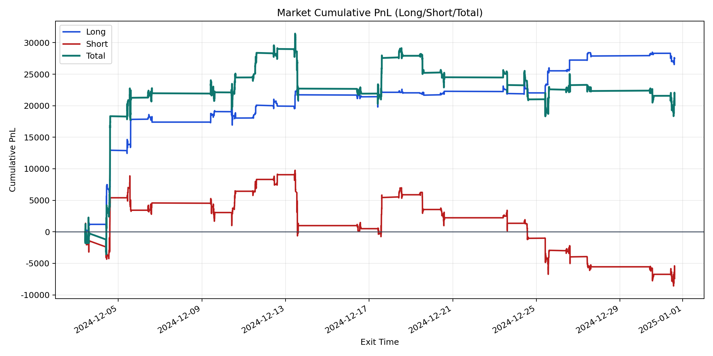
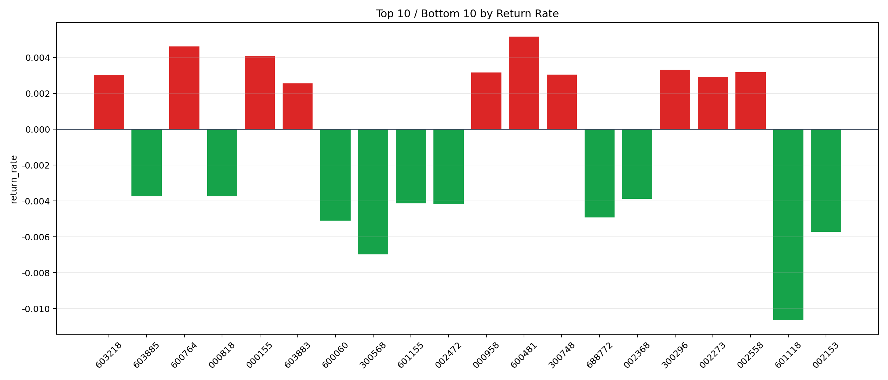

| repo_root | /home/haoranyou/data/output/alpha0.4_1w_5s_3ticks_index_filter/index_weights_500 |
|---|---|
| period_months | 1 |
| period_label | 2024-12-03_to_2024-12-31 |
| start_time | 2024-12-03 09:51:57 |
| end_time | 2024-12-31 14:41:42 |
| n_trades | 9317 |
| n_symbols | 95 |
| total_pnl | 20110.784999999927 |
| long_total_pnl | 27514.666899999964 |
| short_total_pnl | -7403.88190000004 |
| total_entry_notional | 86420828.0 |
| long_entry_notional | 31101567.0 |
| short_entry_notional | 55319261.0 |
| total_return_rate | 0.00023270761765901998 |
| long_return_rate | 0.0008846714025695221 |
| short_return_rate | -0.00013383913244972742 |
| top_symbols_by_return | ["600481", "600764", "000155", "300296", "002558", "000958", "300748", "603218", "002273", "603883"] |
| bottom_symbols_by_return | ["601118", "300568", "002153", "600060", "688772", "002472", "601155", "002368", "000818", "603885"] |

